<!--<!DOCTYPE html>-->
<!--<html lang="en">-->

<!--<head>-->

    <!--<meta charset="utf-8">-->
    <!--<meta http-equiv="X-UA-Compatible" content="IE=edge">-->
    <!--<meta name="viewport" content="width=device-width, initial-scale=1">-->
    <!--<meta name="description" content="">-->
    <!--<meta name="author" content="">-->
    <!--<title>Petrov Front End</title>-->

    <!--&lt;!&ndash; Bootstrap Core CSS &ndash;&gt;-->
    <!--<link href="css/bootstrap.min.css" rel="stylesheet">-->

    <!--&lt;!&ndash; Custom CSS &ndash;&gt;-->
    <!--<link href="css/app.css" rel="stylesheet">-->

    <!--&lt;!&ndash; HTML5 Shim and Respond.js IE8 support of HTML5 elements and media queries &ndash;&gt;-->
    <!--&lt;!&ndash; WARNING: Respond.js doesn't work if you view the page via file:// &ndash;&gt;-->
    <!--&lt;!&ndash;[if lt IE 9]>-->
        <!--<script src="https://oss.maxcdn.com/libs/html5shiv/3.7.0/html5shiv.js"></script>-->
        <!--<script src="https://oss.maxcdn.com/libs/respond.js/1.4.2/respond.min.js"></script>-->
    <!--<![endif]&ndash;&gt;-->

<!--</head>-->

<!--<body>-->
    <!--&lt;!&ndash; Page Content &ndash;&gt;-->
        <!--&lt;!&ndash;personal&ndash;&gt;-->
<!--<div class="container">-->
        <!--&lt;!&ndash;<div class="row personal">&ndash;&gt;-->
                <!--&lt;!&ndash;<div class="col-xs-12">&ndash;&gt;-->
                   <!--&lt;!&ndash;<h2>Меня зовут Дмитрий Петров</h2>&ndash;&gt;-->
                    <!--&lt;!&ndash;<p>В настоящий момент я работаю Front End разработчиком в <a href="http://robokassa.ru/ru/" target="_blank">Robokassa.ru</a>, и каждый день стараюсь улучшить качество сервиса, сделать его интуитивнее, эргономичнее, попросту удобнее.</p>&ndash;&gt;-->
                    <!--&lt;!&ndash;<p>Я работаю с: HTML, CSS, SVG, Bootstrap, JS и jQuery, LESS и github, владею английским языком на уровне upper intermediate, что позволяет мне работать со всей необходимой англоязычной документацией.</p>&ndash;&gt;-->
            <!--&lt;!&ndash;</div>&ndash;&gt;-->
        <!--&lt;!&ndash;</div>&ndash;&gt;-->
        <!--&lt;!&ndash; Page Heading &ndash;&gt;-->
        <!--<div class="row">-->
            <!--<div class="col-lg-12">-->
                <!--<h1 class="page-header">Портфолио-->
                    <!--<small>Расскажет обо мне получше</small>-->
                <!--</h1>-->
            <!--</div>-->
        <!--</div>-->
        <!--&lt;!&ndash; /.row &ndash;&gt;-->

        <!--&lt;!&ndash; Project One &ndash;&gt;-->
        <!--<div class="row">-->
            <!--<div class="col-md-7">-->
                <!--<a href="http://docs.robokassa.ru/" target="_blank">-->
                    <!--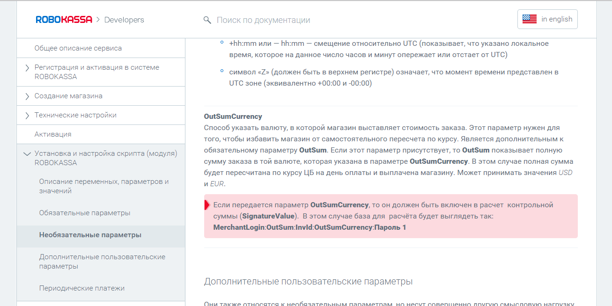-->
                <!--</a>-->
            <!--</div>-->
            <!--<div class="col-md-5">-->
                <!--<h3>Документация Robokassa.ru</h3>-->
                <!--<h4>Сроки: 2 недели</h4>-->
                <!--<p><b>Задачи:</b> Сделать адаптивную страницу, с фиксированным блоком навигации и хедером, не использовать скролл внутри контеного блока.-->
                    <!--Небольшое количество css анимации, так же, должна остаться функция прокрутки меню, контент полностью динамический.-->
                <!--</p>-->
                <!--<p><b>Сложности:</b>-->
                <!--Проект было необходимо сделать в админке cms Umbracco, как следствие, отстутсвие системы контроля версий, препроцессоров(LESS), ужасное форматирование кода админки.-->
                    <!--<br />-->
                    <!--По мимо выше сказанного, проект было необходимо продолжать,а не верстать с нуля, что накладывало ограничения на структуру.-->
                <!--</p>-->
                <!--<a class="btn btn-primary" href="http://docs.robokassa.ru/" target="_blank">Посмотреть в бою<span class="glyphicon glyphicon-chevron-right"></span></a>-->
            <!--</div>-->
        <!--</div>-->
        <!--&lt;!&ndash; /.row &ndash;&gt;-->
        <!--&lt;!&ndash;<hr>&ndash;&gt;-->
    <!--&lt;!&ndash;<div class="row">&ndash;&gt;-->
        <!--&lt;!&ndash;<div class="col-md-7">&ndash;&gt;-->
            <!--&lt;!&ndash;<a href="http://satanworker.github.io/finance/main/index_LTL.html" target="_blank">&ndash;&gt;-->
                <!--&lt;!&ndash;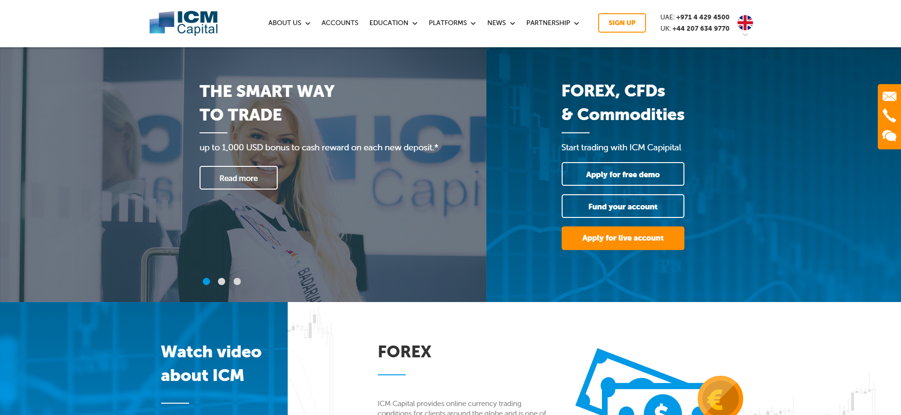&ndash;&gt;-->
            <!--&lt;!&ndash;</a>&ndash;&gt;-->
        <!--&lt;!&ndash;</div>&ndash;&gt;-->
        <!--&lt;!&ndash;<div class="col-md-5">&ndash;&gt;-->
            <!--&lt;!&ndash;<h3>Uber</h3>&ndash;&gt;-->
            <!--&lt;!&ndash;<p><b>Задачи:</b>&ndash;&gt;-->
                <!--&lt;!&ndash;Поддержка и изменение существующего портала Uber.&ndash;&gt;-->
                <!--&lt;!&ndash;Вёрстка и интеграция новых решений для максимальной конверсии.&ndash;&gt;-->
            <!--&lt;!&ndash;</p>&ndash;&gt;-->
            <!--&lt;!&ndash;<p><b>Сложности:</b>&ndash;&gt;-->
                <!--&lt;!&ndash;Большое кол-во поддоменов и очень динамические правки, из-за постоянно меняюшихся требований поисковиков.&ndash;&gt;-->
                <!--&lt;!&ndash;Необходимость соблюдать чужой стиль кода.&ndash;&gt;-->
            <!--&lt;!&ndash;</p>&ndash;&gt;-->
            <!--&lt;!&ndash;<a class="btn btn-primary" href="http://uber-official.ru/" target="_blank">Посмотреть в бою<span class="glyphicon glyphicon-chevron-right"></span></a>&ndash;&gt;-->
        <!--&lt;!&ndash;</div>&ndash;&gt;-->
    <!--&lt;!&ndash;</div>&ndash;&gt;-->
    <!--&lt;!&ndash;&lt;!&ndash; /.row &ndash;&gt;&ndash;&gt;-->
    <!--<hr />-->
    <!--<div class="row">-->
        <!--<div class="col-md-7">-->
            <!--<a href="http://uber-official.ru/" target="_blank">-->
                <!--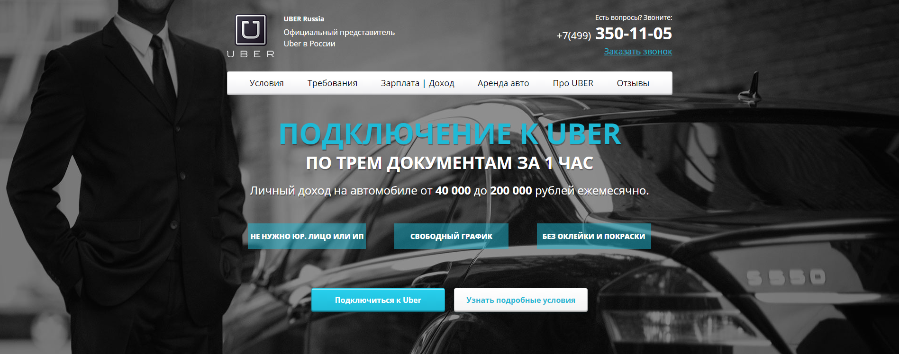-->
            <!--</a>-->
        <!--</div>-->
        <!--<div class="col-md-5">-->
            <!--<h3>Uber</h3>-->
            <!--<p><b>Задачи:</b>-->
                <!--Поддержка и изменение существующего портала Uber.-->
                <!--Вёрстка и интеграция новых решений для максимальной конверсии.-->
            <!--</p>-->
            <!--<p><b>Сложности:</b>-->
                <!--Большое кол-во поддоменов и очень динамические правки, из-за постоянно меняюшихся требований поисковиков.-->
                <!--Необходимость соблюдать чужой стиль кода.-->
            <!--</p>-->
            <!--<a class="btn btn-primary" href="http://uber-official.ru/" target="_blank">Посмотреть в бою<span class="glyphicon glyphicon-chevron-right"></span></a>-->
        <!--</div>-->
    <!--</div>-->
    <!--&lt;!&ndash; /.row &ndash;&gt;-->
    <!--<hr />-->
    <!--<div class="row">-->
        <!--<div class="col-md-7">-->
            <!--<a href="http://дом-иванчай.рф" target="_blank">-->
                <!--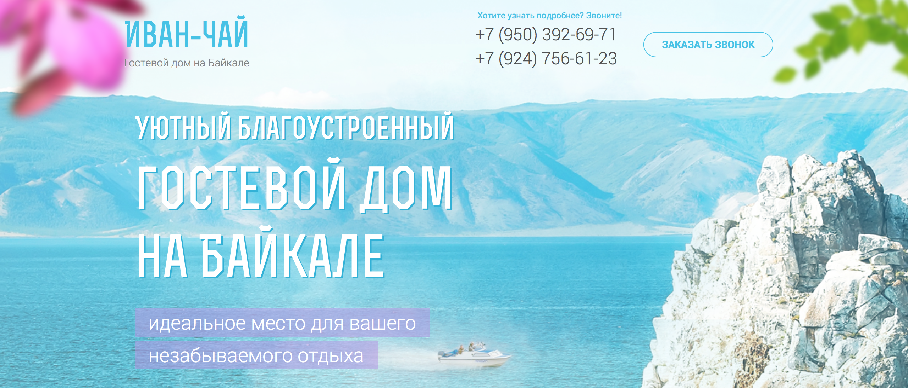-->
            <!--</a>-->
        <!--</div>-->
        <!--<div class="col-md-5">-->
            <!--<h3>Иван Чай</h3>-->
            <!--<h4>Сроки: 5 дней</h4>-->
            <!--<p><b>Задачи:</b>-->
                <!--Сверстать и запрограммировать резиновый лендинг.-->
            <!--</p>-->
            <!--<a class="btn btn-primary" href="http://дом-иванчай.рф" target="_blank">Посмотреть в бою<span class="glyphicon glyphicon-chevron-right"></span></a>-->
        <!--</div>-->
    <!--</div>-->
    <!--&lt;!&ndash; /.row &ndash;&gt;-->
    <!--<hr>-->
    <!--<div class="row mobile">-->
        <!--<div class="col-md-7">-->
            <!--<a href="http://satanworker.github.io/freelance/vet_mobile/index.html" target="_blank">-->
                <!--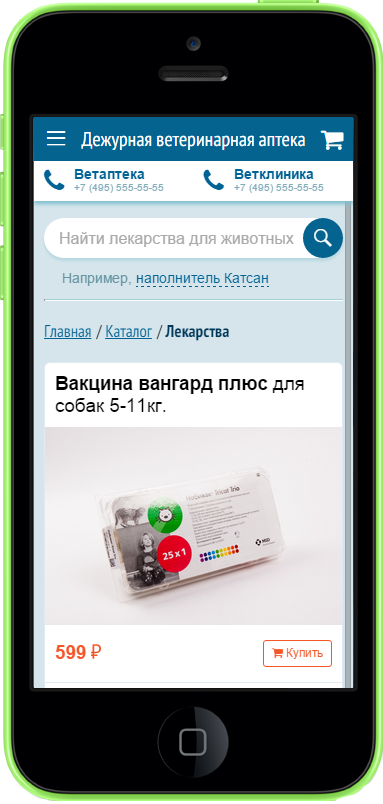-->
            <!--</a>-->
        <!--</div>-->
        <!--<div class="col-md-5">-->
            <!--<h3>Vet mobile</h3>-->
            <!--<h4>Сроки: 4-5 дней</h4>-->
            <!--<p>-->
                <!--<b>Задачи:</b>-->
                <!--Сверстать мобильную версию ресурса  <a href="http://vetapteka1.ru/" target="_blank">http://vetapteka1.ru/</a>, используя фреймворк Ratchet.-->
                <!--Из скриптов: анимированное меню и табы, необходимо было сделать с 0.-->
                <!--Так же необходимо было придерживаться стиля, заданного прошлым верстальщиком.-->
                <!--В целом проект получился чистым и быстрым, максимальное использование svg и кастомных решений, позволило отказаться от тяжёлых решений иконочных шрифтов Ratchet и костыльных js плагинов его же.-->
            <!--</p>-->
            <!--<p>-->
                <!--<b>Сложности:</b>-->
                <!--Использование нового фреймворка, в котором нет понятия структура, было трудно после удобного в этом смысле Bootstrap.-->
                <!--Придерживаться нового стиля в вёрстке и форматировании кода, было так же не привычно.-->
                <!--<br />-->
                <!--<b>Только мобильная версия, лучше всего смотреть на мобильном устройстве</b>-->
            <!--</p>-->
            <!--<a class="btn btn-primary" href="http://satanworker.github.io/freelance/vet_mobile/index.html" target="_blank">Посмотреть исходники<span class="glyphicon glyphicon-chevron-right"></span></a>-->
        <!--</div>-->
    <!--</div>-->
    <!--&lt;!&ndash; /.row &ndash;&gt;-->

    <!--<hr>-->

        <!--&lt;!&ndash; Project Two &ndash;&gt;-->
        <!--<div class="row">-->
            <!--<div class="col-md-7">-->
                <!--<a href="http://remont-megapolis.ru/" target="_blank">-->
                    <!--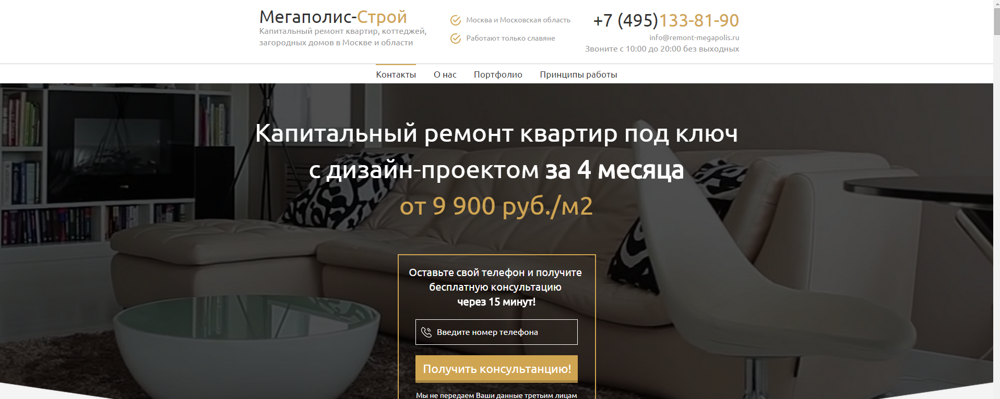-->
                <!--</a>-->
            <!--</div>-->
            <!--<div class="col-md-5">-->
                <!--<h3>Мегаполис-Строй</h3>-->
                <!--<h4>Сроки: 7 дней</h4>-->
                <!--<p>-->
                    <!--<b>Задачи:</b>-->
                    <!--Сверстать резиновый лендинг и полностью подговтивть в бой: наполнить контентом, оптимизировать, сделать отправку заявок.</p>-->
                <!--<p>-->
                    <!--<b>Сложности:</b>-->
                    <!--Огромное количество контента, превью нескольких проектов, с попап окнами для каждого, в которых полноразмерная карусель с большими и уникальными картинками.-->
                    <!--<br />-->
                    <!--Было решено по максимуму отказаться от плагинов и использовать кастомные решения, в итогу было сэкономлено ~400кб, карусели полноразмерных изображений подгружаются в фоне,-->
                    <!--один и тот же блок используется для всех первью окон на сайте-->
                <!--</p>-->
                <!--<a class="btn btn-primary" href="http://remont-megapolis.ru/" target="_blank">Посмотреть в бою<span class="glyphicon glyphicon-chevron-right"></span></a>-->
            <!--</div>-->
        <!--</div>-->
        <!--&lt;!&ndash; /.row &ndash;&gt;-->

        <!--<hr>-->

        <!--&lt;!&ndash; Project Three &ndash;&gt;-->
        <!--<div class="row">-->
            <!--<div class="col-md-7">-->
                <!--<a href="http://satanworker.github.io/freelance/UTC/news.html" target="_blank">-->
                    <!--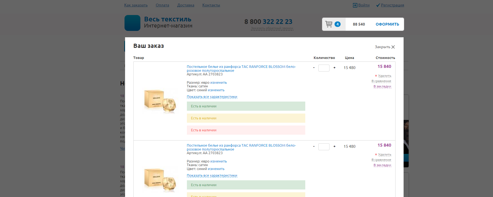-->
                <!--</a>-->
            <!--</div>-->
            <!--<div class="col-md-5">-->
                <!--<h3>Единая торговая система</h3>-->
                <!--<h4>Сроки: 6 дней</h4>-->
                <!--<p>-->
                    <!--<b>Задачи:</b> Статичная кроссбраузерная вёрстка-->
                <!--</p>-->
                <!--<p>-->
                    <!--<b>Сложности:</b> Необходимо сверстать несколько новых блоков в рабочем проекте, соблюсти стилистику кода предыдущего верстальщика.-->
                    <!--<br />-->
                    <!--Сделать полностью готовые страницы к интеграции.-->
                <!--</p>-->
                <!--<a class="btn btn-primary" href="http://satanworker.github.io/freelance/UTC/news.html" target="_blank">Посмотреть исходники<span class="glyphicon glyphicon-chevron-right"></span></a>-->
            <!--</div>-->
        <!--</div>-->
        <!--&lt;!&ndash; /.row &ndash;&gt;-->

        <!--<hr>-->

        <!--&lt;!&ndash; Project Four &ndash;&gt;-->
        <!--<div class="row">-->

            <!--<div class="col-md-7">-->
                <!--<a href="http://satanworker.github.io/freelance/ipc/index.html" target="_blank">-->
                    <!--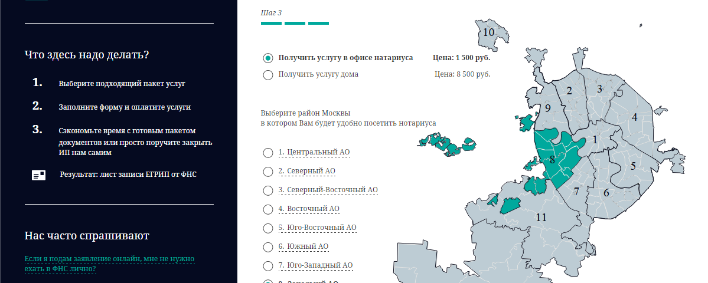-->
                <!--</a>-->
            <!--</div>-->
            <!--<div class="col-md-5">-->
                <!--<h3>Easy Send</h3>-->
                <!--<h4>Сроки: 7 дней</h4>-->
                <!--<p><b>Задачи:</b> Сверстать несколько страниц с svg анимацией, статичная, bootstrap, pixel perfect</p>-->
                <!--<p><b>Сложности:</b>-->
                <!--Очень отзывчивый интерфейс, с плотной интеграцией svg графики, вызов страниц состояния ajax-->
                <!--</p>-->
                <!--<a class="btn btn-primary" ref="http://satanworker.github.io/freelance/ipc/index.html" target="_blank">Посмотреть исходники<span class="glyphicon glyphicon-chevron-right"></span></a>-->
            <!--</div>-->
        <!--</div>-->
        <!--&lt;!&ndash; /.row &ndash;&gt;-->

        <!--<hr>-->

        <!--&lt;!&ndash; Project Five &ndash;&gt;-->
        <!--<div class="row">-->
            <!--<div class="col-md-7">-->
                <!--<a href="http://pol-thermo.ru/" target="_blank">-->
                    <!--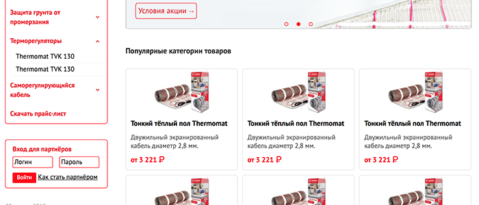-->
                <!--</a>-->
            <!--</div>-->
            <!--<div class="col-md-5">-->
                <!--<h3>Тёплый пол Thermo</h3>-->
                <!--<h4>Сроки: 8 дней</h4>-->
                <!--<p>-->
                    <!--<b>Задачи:</b>-->
                    <!--Сверстать 8 страниц, шаблон электронного письма, несколько всплывающих окон.-->
                    <!--Максимально простая вёрстка готовая к натяжке, была выполненна точно в срок.-->
                <!--</p>-->
                <!--<a class="btn btn-primary" href="http://pol-thermo.ru/" target="_blank">Посмотреть в бою<span class="glyphicon glyphicon-chevron-right"></span></a>-->
            <!--</div>-->
        <!--</div>-->
        <!--&lt;!&ndash; /.row &ndash;&gt;-->

        <!--<hr>-->
    <!--<div class="row">-->
            <!--<div class="col-md-7">-->
                <!--<a href="http://satanworker.github.io/freelance/pizhon/index.html" target="_blank">-->
                    <!--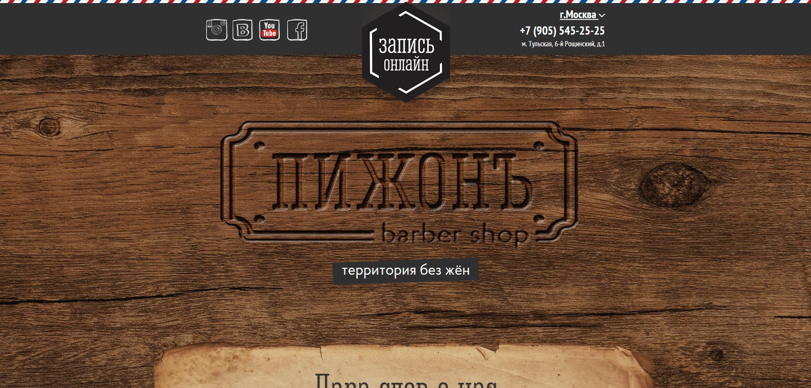-->
                <!--</a>-->
            <!--</div>-->
            <!--<div class="col-md-5">-->
                <!--<h3>Пижон</h3>-->
                <!--<h4>Сроки: 5 дней</h4>-->
                <!--<p>Лендинг, разработанный по всем канонам: анимация, паралакс, оптимизация огромного колличества контента.-->
                <!--<br />-->
                <!--"Во всех смыслах Пижонъ"-->
                <!--</p>-->
                <!--<a class="btn btn-primary" href="http://satanworker.github.io/freelance/wikidrone/index.html" target="_blank">Посмотреть исходники<span class="glyphicon glyphicon-chevron-right"></span></a>-->
            <!--</div>-->
        <!--</div>-->
        <!--&lt;!&ndash; /.row &ndash;&gt;-->

    <!--<hr />-->

    <!--<div class="row">-->
            <!--<div class="col-md-7">-->
                <!--<a href="http://satanworker.github.io/freelance/wikidrone/index.html" target="_blank">-->
                    <!--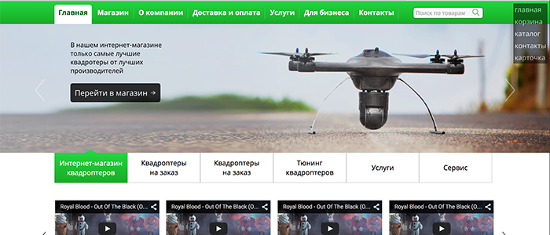-->
                <!--</a>-->
            <!--</div>-->
            <!--<div class="col-md-5">-->
                <!--<h3>Wikidrone</h3>-->
                <!--<h4>Сроки: 5 дней</h4>-->
                <!--<p>Небольшй, но опрятный проект, только вёрстка и необхолдимые для неё скриты, основным требованием к вёрстке была простота, и гибоксть, в проект и по сей день вносятся правки, как заказчиком, так и программистами.</p>-->
                <!--<a class="btn btn-primary" href="http://satanworker.github.io/freelance/wikidrone/index.html" target="_blank">Посмотреть исходники<span class="glyphicon glyphicon-chevron-right"></span></a>-->
            <!--</div>-->
        <!--</div>-->
        <!--&lt;!&ndash; /.row &ndash;&gt;-->

        <!--<hr>-->
        <!--&lt;!&ndash; Footer &ndash;&gt;-->
        <!--<footer>-->
            <!--<div class="row">-->
                <!--<div class="col-lg-12">-->
                    <!--<p> &copy; Дмитрий Петров-->
                        <!--<a href="http://vk.com/id218308733" target="_blank" >-->
                         <!---->
                        <!--</a>-->
                    <!--</p>-->
                    <!--<p class="num">-->
                        <!---->
                        <!--+7 (985) 890 42 42-->
                    <!--</p>-->
                <!--</div>-->
            <!--</div>-->
            <!--&lt;!&ndash; /.row &ndash;&gt;-->
        <!--</footer>-->

    <!--</div>-->
    <!--&lt;!&ndash; /.container &ndash;&gt;-->

    <!--&lt;!&ndash; jQuery &ndash;&gt;-->
    <!--<script src="js/jquery.js"></script>-->

    <!--&lt;!&ndash; Bootstrap Core JavaScript &ndash;&gt;-->
    <!--<script src="js/bootstrap.min.js"></script>-->

<!--</body>-->

<!--</html>-->
